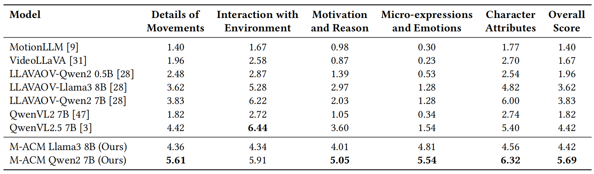

Performance comparison of M-ACM against other models
Generating accurate descriptions of human actions in videos remains a challenging task for video captioning models. Existing approaches often struggle to capture fine-grained motion details, resulting in vague or semantically inconsistent captions.
In this work, we introduce the Motion-Augmented Caption Model (M-ACM), a novel generative framework that enhances caption quality by incorporating motion-aware decoding. At its core, M-ACM leverages motion representations derived from human mesh recovery to explicitly highlight human body dynamics, thereby reducing hallucinations and improving both semantic fidelity and spatial alignment in the generated captions.
To support research in this area, we present the Human Motion Insight (HMI) Dataset, comprising 115K video-description pairs focused on human movement, along with HMI-Bench, a dedicated benchmark for evaluating motion-focused video captioning. Experimental results demonstrate that M-ACM significantly outperforms previous methods in accurately describing complex human motions and subtle temporal variations, setting a new standard for motion-centric video captioning.
Overview of our proposed M-ACM (Motion-Augmented Caption Model) framework. The system processes input videos through dual pathways: a standard visual pathway (top) and a motion-specialized pathway (bottom). The visual pathway extracts general visual features via a frozen vision encoder, while the motion pathway uses ViTPose-based frame sampling and human mesh recovery to generate precise motion representations. Both representations are projected into a common embedding space through trainable projection alignment modules. Our key innovation, Motion Synergetic Decoding (MSD), addresses hallucination issues by comparing logit distributions from both pathways. As shown in the example, without MSD the model incorrectly identifies the basketball being handled with the "foot" (hallucination), whereas with MSD the model correctly identifies the "hand" as the body part manipulating the ball.

The process of building the HMI dataset. Initially, the public video datasets are collected for scene segmentation and cleaning. Then, DWPose and movement criteria are used for filtering to obtain high-quality videos. Video keyframes sampled by ViTPose and the original captions are utilized for video-text collaborative annotation with GPT-4o mini. Additionally, DeepSeek-R1-Distill-Qwen-7B generates question-answer pairs based on the annotated video captions.

The QA annotation process generates question-answer pairs from video captions using DeepSeek-R1-Distill-Qwen-7B to facilitate detailed evaluation and understanding of motion-related content in the HMI dataset.
Data distribution in the HMI dataset.
The composition of QA pairs.
Performance comparison on standard caption metrics in HMI-Bench.
Performance comparison on video captioning in HMI-Bench across five dimensions.
@misc{song2025macm,
title={Towards Fine-Grained Human Motion Video Captioning},
author={Guorui Song and Guocun Wang and Zhe Huang and Jing Lin and Xuefei Zhe and Jian Li and Haoqian Wang},
year={2025},
eprint={2508.14879},
archivePrefix={arXiv},
primaryClass={cs.CV},
url={https://arxiv.org/abs/2508.14879},
}